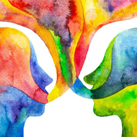
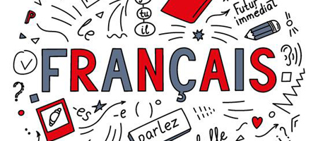
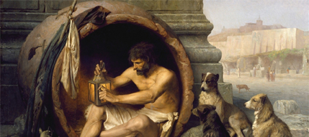

|
AU-DELA DE SOI |
INTERESTS
AND HOBBIES
Get to know me more!
| INTERETS ET LOISIRS | ||||
|  | ||||
|
Arts A discipline of creation and imagination. A realization of inner thoughts and unknown experiences. |
Language A communication tool rendering one's view of the world open to all possibilities, ideas, concepts, and reasonings. |
Calisthenics A discipline of the body in terms of relative weight wherein movement is done through conditioning, balance, and dedication. |
Philosophy A tool of reasoning and understanding concepts beyond human understanding helping and inspiring one to profoundly understand life. |
Music Consequential frequencies in harmonious manner which bring emotions to play. |
|
PERSONAL THOUGHTS ON MY INTERESTS AND HOBBIES |

ARTS
A wonderful and mystical way to improve one's mental health, art is piece of peace. I adore and cherish art, especially those that portray landscape scenery or a human portrait. It evokes something inside me making me feel dazzled and stupified. The beauty that an art holds profoundly lures me to a world of imagination and creativity and shows me the wonders of how humans think. Furthermore, art is something that I transmit through my creative web designs. I may not be good in physical drawings but I always take time in providing aesthetics to my websites. |
|

LANGUAGE
The first time I was interested in learning a language was through a Japenese manga chapter wherein the characters spoke in French. I told myself that Japanese is beautiful and cute and therefore, I learned French. I do not know why. Despite that, French became my 3rd language and my 1st learned non-native language, which add a new level of thinking and helped me with some vocabularies. It also provided some context about the language's culture, which paved the way to open my perspective to further horizons. Language is not just a tool, for me, but a way to think in a way that is poetic and descriptive.
|
|
CALISTHENICS
Coming from the greek words "Kalos" and "Sthenos" meaning "beauty" and "strength", respectively; Calisthenics is a way for one to be strong, athletic, aesthetic with competences of being able to do difficult body movements. Personally, calisthenics is my way to relieve stress and show myself that I am capable of doing things that I never thought I can do. It is something that I have started, not only for the aesthetics, but for the skills requiring great strength. |
|

PHILOSOPHY
I have always wanted to do philosophy but I have no means of doing so since thinking about what my parents told me, it is a risk in terms of financial stability. However, I do philosophy from time to time, trying to understand the world around me. The views, opinions, ideas, and concepts of people are things that I must open myself to because these open the way to further comprehend life itself and how it works. Nevertheless, how can one understand life if life, itself, is not alive? If so, shouldn't we exist? It is a paradox; an incomprehensible dilemma but a poetic one.
|
|
MUSIC
If art evokes the soul through visualization, music evokes through frequencies. Frequencies, flowing in harmony, entering through the ears translated into sentiments. This is also the reason why we feel moved each time we hear music. We feel the sounds accompanied by words through the emotions poured by its creator. Personally, music is my safe haven when I want to feel something; may that be happiness or sadness. It helps me relate to the current situation. |
Qu'en Pensez-Vous ?
Well, do you know me more coming from my interests and hobbies and my perspective of them? I hope yes! Thanks for reading!